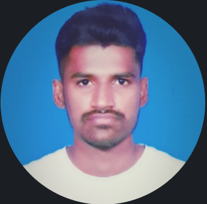

Govindagari, Shiva Prasad Reddy

Carrer Objective
I relate to learning websites development & designing, looking forward for an opportunity that will let me merge my passion for web development and designing and I enjoy the challenge of working with different types of people and coming up with solutions to difficult problems.
Education
- Masters in Computer Science, Clasrkson University (2024-25)
- Bachelors in Computer Science, KGRCET (2019-23)
Projects
-
Web Based Alumni Portal
Developed a website for our college Alumni, which allows students and college alumni to communicate and share knowledege with each other on this webpage.
Techonlogies used: HTML, CSS, PHP, MYSQL
-
Vehicle Number Plate Image Analysis
Developed a website which takes vehicle images as input and extract number plates from those images using different Machine Learning Techniques.
Technologies used: HTML, CSS, JS, Python, ML Models
Technical Skills
- Programming Languages: Python, C(basics)
- Web Technologies: HTML, CSS, JS, jQuery
- Database Management: MYSQL
- MS-Office: MS-Excel, MS-Word, MS-Powerpoint
- Operating system: Windows
Achievements
- Secured 1st position in the coding fest “Tech burn 2021” hosted by our college.
- Completed a web-development Internship organized by VERZEO, and received a certificate for successfully finishing the projects in given time.
Extracurriculars
- Member of Rotaract club for the year 2021-22.
- Conducted a web-development hackathon in college.
- Actively participated in sports.
Hobbies
Contact Me